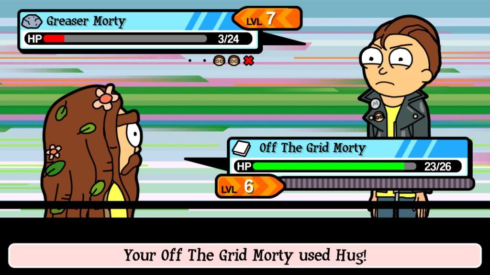

Pocket Morty is uit!
Pocket Morty: De nieuwe game van de makers van Rick and Morty
Pocket Morty is de nieuwe game van de makers van Rick and Morty. In deze game kunnen spelers verschillende versies van Mortys verzamelen en verbeteren in een Pokémon-stijl. Ze kunnen ook verschillende Rick's ontdekken, vechten met andere spelers en hun eigen Mortys en Ricks verbeteren. De game is gratis te downloaden voor zowel iOS als Android.
Pocket Morty: de beste manier om Rick and Morty's wacky avonturen te ervaren
Pocket Morty biedt een unieke ervaring voor fans van de originele Rick and Morty-serie. Spelers kunnen verschillende avonturen beleven met hun eigen Mortys en Ricks. De game biedt ook verschillende levels, waardoor spelers hun ervaring kunnen verbeteren en hun eigen Mortys en Ricks kunnen verbeteren.
Pocket Morty biedt spelers een kijkje in de wacky avonturen van Rick and Morty. De game biedt een unieke ervaring waarbij spelers hun eigen versies van Mortys en Ricks kunnen verzamelen en verbeteren. Ook kunnen spelers verschillende levels beleven en vechten met andere spelers. Dit maakt Pocket Morty een geweldige manier om de avonturen van Rick and Morty te ervaren.